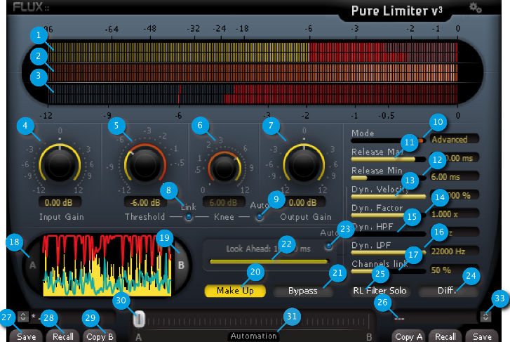

Pure Limiter
1 Pure Limiter

Pure Limiter makes transparent limiting easy; a dramatic increase of the average audio level can now be accomplished without damaging the perceived audio quality, with the exquisite proprietary Flux:: technology generating a release envelope assuring that no artifacts on the processed sound are produced. Unless you use it as a special effect, Pure Limiter should always be in the very last stage of your audio processing chain.
To make the setting even easier, the Pure Limiter also features two display modes, when mode A is engaged, both original and limited waveforms are displayed. The Mode B displays the limited waveform, the limiter action and the histogram of the release value which is especially useful when running in advanced mode. All display meters are peak-meters featuring a peak hold.
1.1 Input Level Meter(1)
from -96 dB to 0 dB
1.2 Output Level Meter(2)
from -96 dB to 0 dB
1.3 Limiting Level Meter(3)
from 0 dB to -12 dB
1.4 Input Gain (4)
Unit: dB
Value Range: -12 / +12
Step: 0.01.
Default Value: 0 dB.
Sets the gain applied to the dynamic processing input. ## Threshold (5) Unit: dB
Value Range: -12 / 0
Step: 0.01.
Default Value: 0 dB
Sets the threshold of the limiting action. This value is displayed into the input peak meter.
1.5 Knee (6)
Unit: dB
Value Range: 0 / +12
Step: 0.01.
Default Value: 0 dB
Sets the smoothness of the transmission curve for the limiting action. The curve is smoothed above the threshold value. The transition range between the linear transfer to the fully limited transfer is set by the knee value.
1.6 Output Gain (7)
Unit: dB
Value Range: -12 / +12
Step: 0.01.
Default Value: 0 dB
Sets the global gain applied to the dynamic processing output.
1.7 Link Knee (8)
When enabled the knee value reflects the threshold value. Setting the threshold also sets the knee.
1.8 Auto Knee (9)
The knee is automatically defined according to your settings and may vary according to the audio material.
1.9 Mode (10)
Default Value: Auto.
Three modes are available for the envelop of the dynamic processing.
Manual corresponds to the value you have set.
Auto enables our specific algorithm to generate a signal dependent value to avoid typical pumping effects.
Advanced will allow you to tweak the automatic mode.
1.10 Release Maximum (11)
Unit: ms
Value Range: 1.75 / 12000
Step: variable.
Default Value: 3000 ms
Sets the manual release value and the maximum release value when in Advanced Mode.
1.11 Release Minimum (12)
Unit: ms
Value Range: 0.75 / 11999
Step: variable.
Default Value: 60 ms
Sets the minimum release value when in Advanced Mode.
1.12 Dynamic Velocity (13)
Unit: %
Value Range: 0 / 100
Step: variable.
Default Value: 100%
Apply a release to the extracted real time dynamic informations.
100% Mean full velocity (no release).
1.13 Dynamic Factor (14)
Unit: x
Value Range: 0 / 3.0
Step: variable.
Default Value: 1
Amplify or dim the extracted real time dynamic informations.
1.14 Dynamic High Pass Filter (15)
Unit: Hz
Value Range: 10 / 21900
Step: variable.
Default Value: 10 Hz
Sets the Lowest frequency feeding the release control section.
1.15 Dynamic Low Pass Filter (16)
Unit: Hz
Value Range: 110 / 22000
Step: variable.
Default Value: 22000 KHz
Sets the highest frequency feeding release control section.
1.16 Channels Link (17)
% of channels linkage
Unit: Percents (%)
Range: 0 to 100
Min. Steps: 1
Default Value: 50%
1.17 Display A /B (18) (19)
Toggle display of the dynamic curve
1.18 Make Up (20)
When engaged, the output gain is increased from the threshold value.
1.19 Bypass (21)
Default Value: Off. The inputs are directly routed to the outputs.
1.20 Lookahead (22)
Unit: ms
Value Range: 0 / 10
Default Value: 10
Step: 1 sample
This delay line allows to decrease the gain before the audio peak arrives. It’s a key point to avoid audio distortion. Note that changing this delay value may create clicks. Note also that this delay value is applied to the processed signal and it increases the processing latency.
1.21 Auto Lookahead (23)
The look ahead is automatically defined according to other settings and may vary according to the audio material.
1.22 Diff (24)
Allow to hear the difference only. Used to better understand the action and allow to easily tweak the parameters On/Off
Default Value: Off
1.23 Dynamic Filter Solo (25)
When engaged, the signal feeding the dynamic extraction section is monitored. This allows to control which part of the audio spectrum is used to compute the release value.
1.24 Loaded Preset Display (26)
A plug-in features two preset sections; A & B. Clicking on the slot of a specific section reaches the preset bank. The main display is now a preset list in which you can select the preset you want to recall or save in the specific preset section. Two different presets must be used if you plan to use the morphing capability of FLUX Plug-in.
1.25 Save (27)
Save replaces the selected preset by a new one under the same name featuring the current settings. If you want to keep an existing preset without your new modifications, just select an empty place into the preset list, enter a new name for this modified preset featuring the current settings and press Save.
1.26 Recall (28)
Once a preset is selected from the preset list it must be explicitly loaded into section A or section B by using the recall button. A preset is effective only after it has been recalled.
1.27 Copy A Copy B (29)
The current parameters of a section are copied to the other one. The section A or B is re-initialized with the current values and the morphing slider is parked at 100% of the corresponding section.
1.28 Morphing Slider (30)
This horizontal slider has no unity nor specific value display. It allows to morph current settings between two loaded presets. A double-click on one side of the slider area toggles between full A and full B settings. The results of an in-between setting can be saved as a new preset.
1.29 Automation (31)
Default Value: Off
When this button is disabled, all the plug-in parameters values are recorded when writing automation. The morphing slider is ignored.
When reading automation, if this button is disabled, all the plug-in parameters are controlled by the host automation except the morphing slider.
When this button is engaged, all parameters are recorded when writing automation uncluding the morphing slider.
When this button is engaged, ONLY the morphing slider value is applied when reading automation.
The Automation button must be engaged if the morphing slider has to be mapped on a control surface.